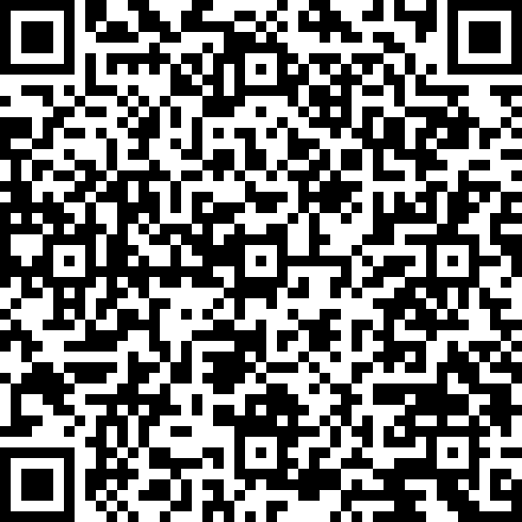

Çmimi që sheh është çmimi që paguan. Pa tarifa të fshehura.
Kartela jote nuk kalon kurrë nëpër duart tona.
Kodi rri në telefon edhe pa internet — pikërisht atje ku të duhet.

Google Play · falas · shqip dhe anglisht